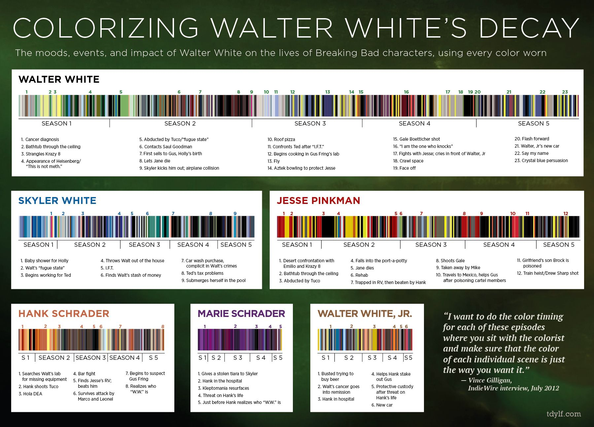

ASSIGNMENT #4 STORY: Information Culture Playlist featuring Breaking Bad and Borat The
Subsequent Moviefilm
For the third assignment in INF311, students were to write a 2700-3000 word essay on including 2
or more creative works that should be included on the information culture playlists. These works
are essential for viewing/reading/playing/listening/etc. to a course like INF311.

“Colorizing Walter White’s
Decay”. Courtesy of John LaRue
Breaking Bad and Symbolism
Firstly, Breaking Bad is filled with symbolism. Walter White and his fellow characters
are all
shrouded in symbolism. We can see that Walter White wears different colours throughout
Breaking Bad. Furthermore, Walter’s alter ego Heisenberg is an important symbol to
foreshadow events to come. Symbols are important, especially when studying them in information
culture. They are deeply rooted in us as we develop as children.
Borat Performing as Country Steve at MAGA rally. Courtesy of Amazon
Studios
Borat 2, the Pandemic and 2020 Election
Secondly, Borat 2is straight off the press of the 2020 pandemic. At the time of writing, we are
still living in this situation. Borat is not afraid to poke fun at the pandemic, anti-maskers,
Trump supporters, and most importantly the American people. This film is in touch with what
everyone lives in the moment and is not afraid to point out the unjust in our information
culture right now.
Satirial Literacy
Lastly, I will incorporate both pieces together and argue that the satire used in both pieces is
what makes both pieces so enjoyable to watch. The satire in Breaking Bad makes Walter White’s
life entirely ironic. Viewers enjoy this as we know that Walter’s life could never happen. On
the other hand, the satire in Borat 2 is outrageous. There could never be a character like
Borat, or a country like Kazakhstan in Borat 2. These things are funny because they are
unreasonable. The satirical knowledge required in both Breaking Bad and Borat 2 makes both
creative pieces important for our information culture.
PDF